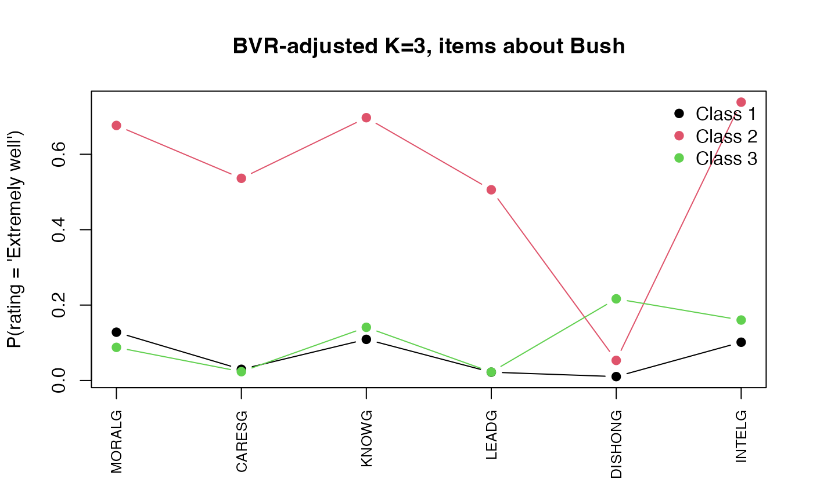

A Workflow for Latent Class Analysis: Naive Fit, BVR Adjustments, and Spectral Local Dependence
Ali Sanaei
2026-05-28
Source:vignettes/workflow.Rmd
workflow.RmdWhy this vignette
Latent class models are easy to over-trust. The default specification assumes the manifest indicators are locally independent within each class. That is, conditional on class membership the items carry no further information about each other. When that assumption is violated, the EM algorithm compensates by inventing extra classes whose only purpose is to absorb pairwise correlation. The resulting solution inflates , distorts class meaning, and inflates the standard errors of any downstream distal analysis.
This vignette walks through three responses to that problem on a single dataset:
- A naive fit that treats local independence as given.
- A BVR-guided fit that adds pairwise direct effects between manifest items whose bivariate residuals (Vermunt, 1999) exceed a chi-squared threshold.
- A fit with Spectral Local Dependence (SLD), a
low-rank decomposition of the conditional Burt matrix that captures
correlated structure across many items at once (see the
companion vignette
vignette("sld-theory")for the math).
We use poLCA::election, a study of how respondents rated
the moral character, competence, and dishonesty of George W. Bush
(G items) and Al Gore (B items) in 2000. The
items come in conceptually parallel pairs
(MORALG/MORALB,
KNOWG/KNOWB, and so on), so we have an a
priori reason to expect local dependence: ratings of the same
candidate cluster together, and parallel items about the two candidates
may also covary through partisan affect.
Setup
data("election", package = "poLCA")
cat_items <- c("MORALG", "CARESG", "KNOWG", "LEADG", "DISHONG", "INTELG",
"MORALB", "CARESB", "KNOWB", "LEADB", "DISHONB", "INTELB")
# `fit_lca` requires a complete-case rectangle in the indicators (it
# tolerates NAs in the categorical likelihood, but auto_bvr's
# bookkeeping is cleaner without them).
keep <- stats::complete.cases(election[, cat_items])
elec <- election[keep, ]
dim(elec)Each item is rated on a four-point scale. The respondent count after listwise deletion is about 1,311.
1. The naive fit: ignore local dependence
We fit two-, three-, and four-class models with
dependence = "full" on the (nonexistent) continuous side
and implicit local independence on the categorical side.
elec_fits <- lapply(2:4, function(K) {
fit_lca(elec, categorical = cat_items, n_classes = K,
control = lca_control(n_starts = 5, seed = 110),
verbose = FALSE)
})
names(elec_fits) <- paste0("K", 2:4)
compare_models(elec_fits)
#> K LL n_params AIC BIC aBIC entropy ICL
#> K2 2 -17344.92 73 34835.85 35213.88 34981.99 0.8099402 35559.30
#> K3 3 -16714.66 110 33649.32 34218.96 33869.54 0.8335060 34698.56
#> K4 4 -16350.59 147 32995.19 33756.44 33289.49 0.8509381 34298.26The standard reading: BIC keeps dropping as we add classes, suggesting . Entropy is in the comfortable range. Most analysts would declare success here.
That conclusion is fragile.
2. Diagnosing local dependence with bivariate residuals
bvr_categorical() computes a chi-squared statistic for
each pair of items, contrasting the observed bivariate frequency against
what the model predicts under local independence. Values above 3.84
indicate significant local dependence
(,
).
fit_K3 <- elec_fits$K3
bvr_K3 <- bvr_categorical(fit_K3, elec)
head(bvr_K3, 8)
#> var1 var2 bvr df p_value
#> 24 KNOWG INTELG 519.7075 9 3.457269e-106
#> 63 KNOWB INTELB 374.6492 9 3.487782e-75
#> 13 CARESG LEADG 289.8999 9 3.615664e-57
#> 1 MORALG CARESG 237.1667 9 5.084504e-46
#> 4 MORALG DISHONG 196.7695 9 1.574751e-37
#> 22 KNOWG LEADG 177.7468 9 1.496528e-33
#> 3 MORALG LEADG 177.1786 9 1.966309e-33
#> 32 LEADG INTELG 176.2117 9 3.128787e-33Several pairs sit far above the threshold, and the structure is not
random. The largest residuals fall along the candidate diagonal
(G-items pair with G-items,
B-items pair with B-items). The model is
forcing parallel ratings of the same candidate to look conditionally
independent when they manifestly are not.
We can also visualise the residual network on the continuous side via
plot(model, type = "bvr"); the same diagnostic logic
applies to categorical pairs once you tabulate them.
3. BVR-guided specification search
auto_bvr() automates the Hagenaars-Vermunt-Magidson
specification search: at each step it identifies the largest BVR pair,
adds it as a direct effect, refits, and stops when BIC ceases to improve
(or a cap is hit).
elec_bvr <- auto_bvr(
data = elec, categorical = cat_items,
K_range = 3, # fix K so the comparison stays clean
max_direct_effects = 4L,
bvr_threshold = 3.84,
seed = 110, verbose = FALSE,
n_starts = 5)
elec_bvr$auto_path$direct_effectsThe search added three direct effects:
elec_bvr$auto_path$direct_effects
#> [[1]]
#> [1] "KNOWG" "INTELG"
#>
#> [[2]]
#> [1] "KNOWB" "INTELB"
#>
#> [[3]]
#> [1] "KNOWB" "LEADB"All three involve the KNOW items, which is
interpretable: judgements about how much a candidate “knows” cluster
with judgements about competence (INTELG,
LEADB) on the same candidate. The BVR machinery
surfaced what was already visible in the residual table.
fi_naive <- fit_indices(fit_K3)
fi_bvr <- fit_indices(elec_bvr)
data.frame(
Model = c("Naive K=3", "BVR-adjusted K=3"),
log_lik = round(c(fi_naive$log_lik, fi_bvr$log_lik), 2),
n_params = c(fi_naive$n_params, fi_bvr$n_params),
BIC = round(c(fi_naive$BIC, fi_bvr$BIC), 2),
entropy = round(c(fi_naive$entropy, fi_bvr$entropy), 3)
)
#> Model log_lik n_params BIC entropy
#> 1 Naive K=3 -16714.66 110 34218.96 0.834
#> 2 BVR-adjusted K=3 -15957.32 191 33285.75 0.819BIC drops sharply (~ 33 points per direct effect on this dataset, far in excess of the BIC penalty for the extra parameters). The specification is straightforwardly better, and it does so without inflating .
4. Spectral Local Dependence (SLD)
Direct effects work pair by pair. When the dependence is low-dimensional (for example, an underlying latent direction such as partisanship that pulls many ratings of the same candidate together), SLD captures the same structure in a single rank- projection instead of separate pairwise terms.
auto_sld() runs a greedy forward search over
class-specific ranks, adding one rank to the class with the largest
unmodelled eigenvalue, accepting only if BIC improves.
elec_sld <- auto_sld(
data = elec, categorical = cat_items,
n_classes = 3,
max_rank_per_class = 3L,
criterion = "BIC",
seed = 110, verbose = FALSE)
elec_sld$specs$spectral_rank
elec_sld$specs$spectral_rank
#> [1] 1 0 2
round(fit_indices(elec_sld)$BIC, 2)
#> [1] 33762.96auto_sld settles at ranks [1, 0, 2]: class
2 (the moderate/ambivalent class) gets no spectral structure, while the
two more polarized classes each pick up at least one low-rank latent
direction. The BIC drops from ~34219 (naive K=3) to ~33763, a real gain,
though smaller than the BVR-adjusted fit (~33286).
This comparison is informative on its own:
fi_naive <- fit_indices(fit_K3)
fi_bvr <- fit_indices(elec_bvr)
fi_sld <- fit_indices(elec_sld)
data.frame(
Model = c("Naive K=3", "BVR (3 direct effects)", "SLD (ranks 1,0,2)"),
n_params = c(fi_naive$n_params, fi_bvr$n_params, fi_sld$n_params),
BIC = round(c(fi_naive$BIC, fi_bvr$BIC, fi_sld$BIC), 2),
entropy = round(c(fi_naive$entropy, fi_bvr$entropy, fi_sld$entropy), 3)
)
#> Model n_params BIC entropy
#> 1 Naive K=3 110 34218.96 0.834
#> 2 BVR (3 direct effects) 191 33285.75 0.819
#> 3 SLD (ranks 1,0,2) 213 33762.96 0.819On this dataset, pairwise direct effects win. The election items divide cleanly into G-pairs and B-pairs, so the local dependence shows up as a small number of large pairwise residuals, exactly what direct effects were designed to absorb. SLD captures the same structure but spends parameters on every item-pair coupling that the latent direction implies, even pairs that the data does not flag as dependent.
SLD shines elsewhere: when residual covariance is
broadly distributed across many items (say, a partisanship
dimension that shifts every rating slightly), the
rank-
projection beats
candidate direct-effect terms. See vignette("sld-theory")
for the math and a worked example.
You can also inspect the SLD loadings to read off which items contribute to each latent direction:
plot(elec_sld, type = "spectral_loadings", dimension = 1, class = 3)
SLD loadings: rank 1 in class 3.
5. Substantive comparison: who are the classes?
props_naive <- round(colMeans(get_posteriors(fit_K3)), 3)
props_bvr <- round(colMeans(get_posteriors(elec_bvr)), 3)
data.frame(class = 1:3, naive = props_naive, bvr_adjusted = props_bvr)
#> class naive bvr_adjusted
#> 1 1 0.419 0.419
#> 2 2 0.320 0.260
#> 3 3 0.261 0.321The class proportions move only slightly. The substantive class meaning changes more visibly in the response profiles:
# Build a small profile plot manually from the categorical params.
# This keeps the vignette dependency-light and shows readers exactly
# how to extract any quantity from a fitted mixLCA object.
extract_extremely_well <- function(fit, items) {
K <- fit$n_classes
cp <- fit$categorical_params
out <- matrix(NA_real_, K, length(items), dimnames = list(paste("Class", 1:K), items))
for (k in 1:K) {
for (it in items) {
probs <- cp[[k]][[it]]
hit <- grep("Extremely well", names(probs), ignore.case = TRUE, fixed = FALSE)
if (length(hit)) out[k, it] <- probs[[hit[1]]]
}
}
out
}
g_items <- c("MORALG","CARESG","KNOWG","LEADG","DISHONG","INTELG")
mat_naive <- extract_extremely_well(fit_K3, g_items)
matplot(t(mat_naive), type = "b", pch = 19, lty = 1,
xaxt = "n", xlab = "", ylab = "P(rating = 'Extremely well')",
main = "Naive K=3, items about Bush")
axis(1, at = seq_along(g_items), labels = g_items, las = 2, cex.axis = 0.8)
legend("topright", legend = rownames(mat_naive), pch = 19, col = 1:nrow(mat_naive), bty = "n")
Naive K=3: P(rating = ‘Extremely well’ | class) for the six G-items.
The three classes separate as you would expect: one strongly positive about Bush across all items, one negative, one ambivalent. The BVR- adjusted model recovers the same broad story but with sharper edges because direct effects relieve the latent classes from explaining the within-candidate covariance:
mat_bvr <- extract_extremely_well(elec_bvr, g_items)
matplot(t(mat_bvr), type = "b", pch = 19, lty = 1,
xaxt = "n", xlab = "", ylab = "P(rating = 'Extremely well')",
main = "BVR-adjusted K=3, items about Bush")
axis(1, at = seq_along(g_items), labels = g_items, las = 2, cex.axis = 0.8)
legend("topright", legend = rownames(mat_bvr), pch = 19, col = 1:nrow(mat_bvr), bty = "n")
BVR-adjusted K=3: same items.
6. Takeaways
-
Run the diagnostic. A satisfying BIC trajectory
across
is not evidence that your specification is correct. Always inspect
bvr_categorical()(for categorical indicators) orbvr_tests()(for continuous) before naming the classes. -
Pairwise vs. low-rank. Direct effects handle a few
misbehaving pairs efficiently; SLD handles broad residual structure
efficiently. The two are complementary;
fit_lca()lets you supply both. - Don’t add classes to absorb dependence. The naive K=4 fit looked like it was winning on BIC. Once we model the local dependence properly, K=3 is fine, and class meaning is preserved across refits.
See also:
-
vignette("distal-covariates")for distal outcome estimation under BCH weighting, and for the formula interface to concomitant predictors. -
vignette("sld-theory")for the math and a worked example where SLD outperforms BVR.
Session info
sessionInfo()
#> R version 4.4.3 (2025-02-28)
#> Platform: aarch64-apple-darwin20
#> Running under: macOS Sequoia 15.7.4
#>
#> Matrix products: default
#> BLAS: /Library/Frameworks/R.framework/Versions/4.4-arm64/Resources/lib/libRblas.0.dylib
#> LAPACK: /Library/Frameworks/R.framework/Versions/4.4-arm64/Resources/lib/libRlapack.dylib; LAPACK version 3.12.0
#>
#> locale:
#> [1] C
#>
#> time zone: America/Chicago
#> tzcode source: internal
#>
#> attached base packages:
#> [1] stats graphics grDevices utils datasets methods base
#>
#> other attached packages:
#> [1] mixLCA_1.0.1
#>
#> loaded via a namespace (and not attached):
#> [1] gtable_0.3.6 jsonlite_2.0.0 dplyr_1.2.0 compiler_4.4.3
#> [5] tidyselect_1.2.1 Rcpp_1.1.0 jquerylib_0.1.4 systemfonts_1.2.3
#> [9] scales_1.4.0 textshaping_1.0.1 yaml_2.3.10 fastmap_1.2.0
#> [13] ggplot2_4.0.2 R6_2.6.1 labeling_0.4.3 generics_0.1.4
#> [17] knitr_1.51 htmlwidgets_1.6.4 tibble_3.3.0 desc_1.4.3
#> [21] bslib_0.9.0 pillar_1.11.0 RColorBrewer_1.1-3 rlang_1.1.7
#> [25] cachem_1.1.0 xfun_0.52 fs_1.6.7 sass_0.4.10
#> [29] S7_0.2.1 cli_3.6.5 pkgdown_2.2.0 withr_3.0.2
#> [33] magrittr_2.0.3 digest_0.6.37 grid_4.4.3 lifecycle_1.0.5
#> [37] vctrs_0.7.1 evaluate_1.0.4 glue_1.8.0 farver_2.1.2
#> [41] ragg_1.4.0 rmarkdown_2.30 tools_4.4.3 pkgconfig_2.0.3
#> [45] htmltools_0.5.8.1